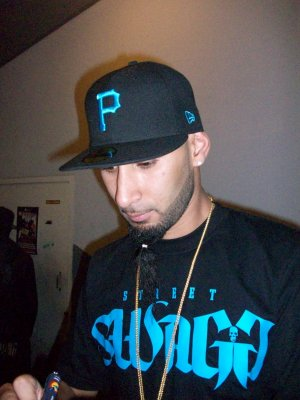
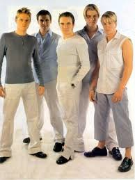
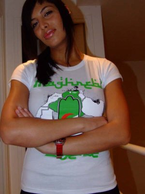

La Fouine

Meeste bekende liedjes
- *La Fouine feat Sindy - Vrais frères
- *La Fouine feat Zaho - Ma Meilleure
- *La Fouine - Quand je partirai
- *La Fouine feat Reda - Va Bene
- *La Fouine - J'avais pas les mots
- *La Fouine feat Sultan - Paname Boss
- *La Fouine - Tous les mêmes
- *La Fouine - Veni Vidi Vici
Frank Edward

Music life & Rocktown
- Mr. Edwards is a producer, plays several musical
- instrument and is a keyboardist and a member of the
- Presidential band of Pastor Chris Oyakhilome
- in Christ Embassy Church. His debut album
- Embassy Church. His debut album The Definition was
- released in 2008. It was a 14-track album and was
- distributed by Honesty Music.[2] Angels on the
Matt Pokora
Boeken over Matt pokora
- Arnaud Babion-Collet: la révolution R&B.
- M. Pokora vu par. Paris : P. Petiot, 2008
- M. Pokora : de Matthieu à Robin des Bois.
- M. Pokora : la véritable histoire.
- Saint-Victor-d'Epine : City, 2014, 250 p.
- M. Pokora de A à Z : le dictionnaire de la vie
- Matthieu Pokora. Saint-Victor-d'Epine
- Pierre Pernez (préf. Lionel Florence)
Weslife

*Albums
- *1999 Westlife #2 UK, #129 USA, #15 AUS 2
- *2000 Coast To Coast #1 UK, #40 AUS
- *2001 World Of Our Own #1 UK
- *2002 Unbreakable - The Greatest Hits - Vol. 1 #1 UK, #66 AUS
- *2003 Turnaround #1 UK
- *2004 Allow Us To Be Frank #3 UK
- *2007 Back Home #1 UK
- *2009 Where We Are
Zaho

Bibliografie
- Zaho is geboren in Algerije, waar ze verbleef
- tot haar 18e jaar.Haar vader was staflid van een
- universiteit en haar moeder doceerde daar wiskunde.
- Ze heeft een zus en een broer. Deze laatste heeft
- een zeer vrouwelijke stem, die contrasteert met de
- stem van Zaho, waardoor ze vaak voor een jongen werd
- aangezien.Ze heeft gitaar leren spelen op zevenjarige leeftijd
- In 1999 emigreerde ze naar Montreal, Canada, met haar familie.
Chidima
Music Career
- Prior to auditioning for the third edition of Project Fame
- West Africa, she dreamt of being part of the
- reality TV show that was instituted in 2008.
- With the help and support from her close
- knit friend, Chidinma left her home in Ikorodu
- and went to the Ultima Studios, the venue
- for the show's 2010 Lagos auditions. She was among the
- 8,000 or so contestants who went to showcase their talents that year.